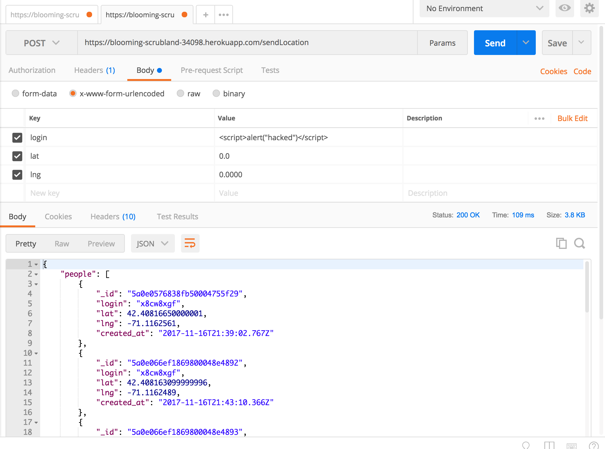

Introduction
The product is a server(https://blooming-scrubland-34098.herokuapp.com) that stores people's login and their location(latitude and longitude). When you send in your login, lat, and lng through a HTTP POST, you get back a list of all users who checked in and landmarks within a one mile radius. When you go to the server homepage(HTTP GET), there is a list of all of the checkins filtered by the most recent. Additionally, you can query the server to search for a particular individual. I am hired to explore the security vulnerabilities in the server and provide suggestions on how to patch up these issues.
Methodology
I first performed the attacks with the "black box" testing method. Then, I went through the source code to look for other vulnerabilities. Additionally, I used postman to make my post and get requests.
Abstract of Findings
Websites that allow user inputs are susceptible to security flaws if they don't provide proper input sanitation methods. If you allow users to input whatever they desire, they could use this opportunity to input malicious code that could make your server redirect you to another page and expose your privacy.
Issues Found
- Issue: Cross-site scripting
- Location: Server home page (/get)
- Severity of Issue: High - XSS poses high security risks because it could present users with fradulent web content and annoying messages. Instead of going to the user's intended website, the XSS attack could redirect the user to a malicious website.
- Description of issue: Instead of inputting a legitimate username, I inputted the script "window.location='http://www.nyan.cat/'" instead. From now on, when I go to the homepage, instead of getting a list of people who checked in, I will be redirected to the nyan cat page.
- Resolution: The user input should be stripped of special characters using .replace(/[^\w\s]/gi, '');

- Issue: MongoDB Injection
- Location: /checkins.json?login=query_phrase
- Severity of Issue: High - MongoDB injection allows the user to gain more information than is allowed. For example, the user could use this attack method to find the location of all users who checked into the server. This is a security flaw because it reveals private information of all of the users to the attacker.
- Description of issue: When you are using the /checkins.json?login=query_phrase and insert [$ne] after the login, the server will return all of the users who checked into the server. The [$ne] means that the server will return all of the data where the username is not equal to query.
- Resolution: One option is to use the mongo-sanitize middleware to strip out any keys that start with '$' so that the user can no longer us the $ne operator.
References:
- https://github.com/tuftsdev/WebProgramming/blob/gh-pages/examples/nodejs/nodemongoapp/server.js
- https://zanon.io/posts/nosql-injection-in-mongodb